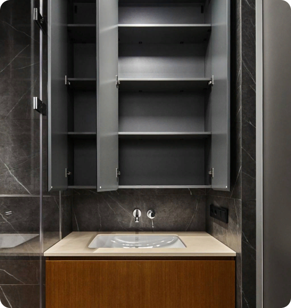

13.03.2024
Рабочий кабинет или место спокойствия— какие ассоциации знаете про ванные комнаты?

Ванная комната для мужчин — это не просто комната быстрого использования, это священное место, где они проводят много времени. Несколько причин, почему она так важна:
- 1. Место гигиенических процедур: бритье, уход за волосами и кожей. Это время, когда мужчина может уделить внимание себе и почувствовать себя ухоженными.
- 2. Место отдыха и расслабления, уединения, где можно и побыть наедине с собой, подумать о делах или просто отдохнуть после трудного дня.
- 3. Место саморазвития. Многие мужчины любят читать, просматривать новости или изучать что-то новое.
- 4. И наконец — место для саморефлексии и самоанализа, где в тихой обстановке можно задуматься о целях, планах и принять важные решения.
Это не просто унитаз и раковина. Даже такому, кажется, обычному пространству, важно придать эстетику и необходимую функциональность.